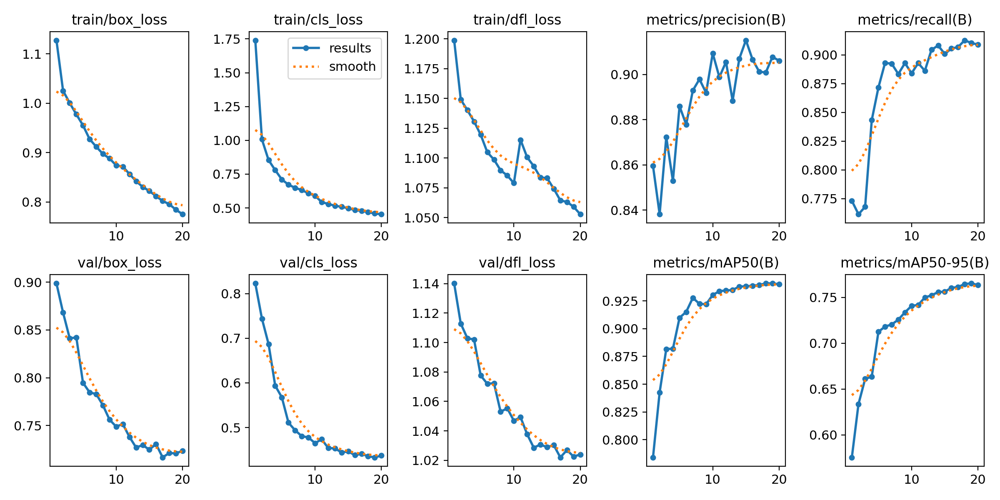
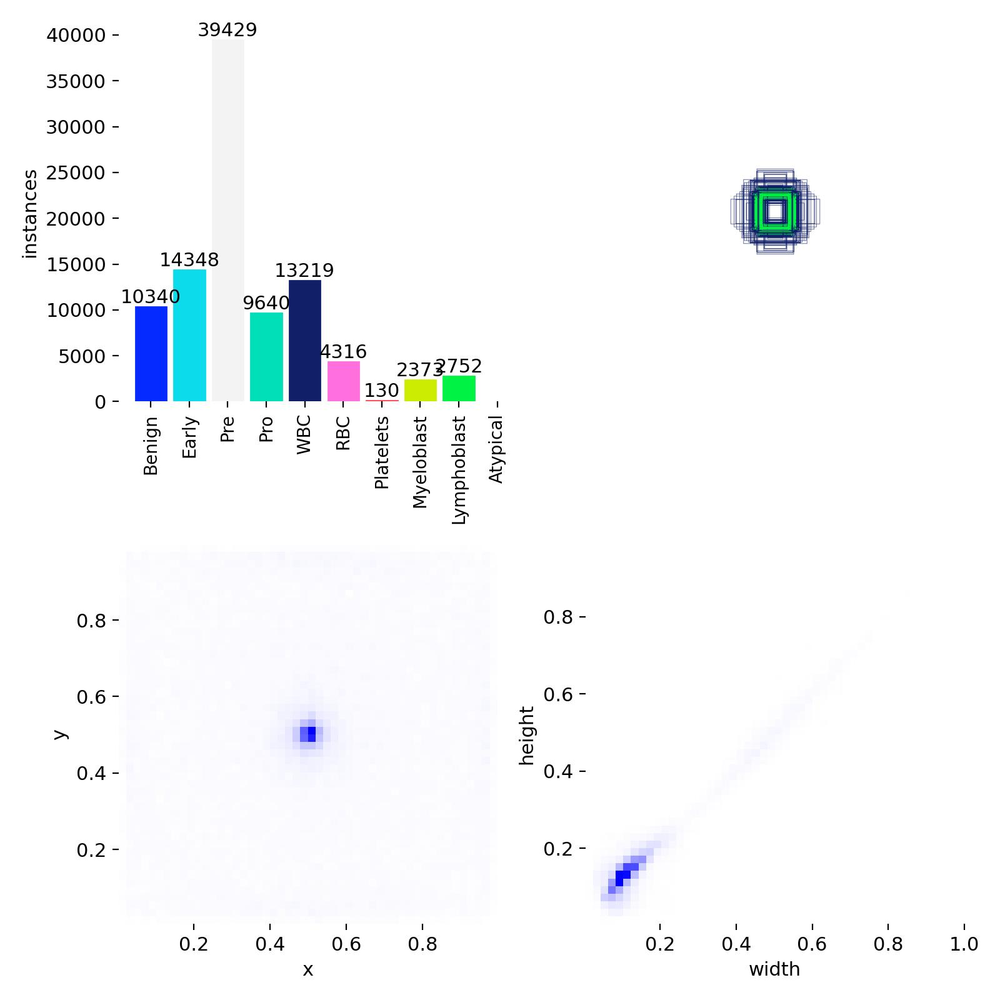
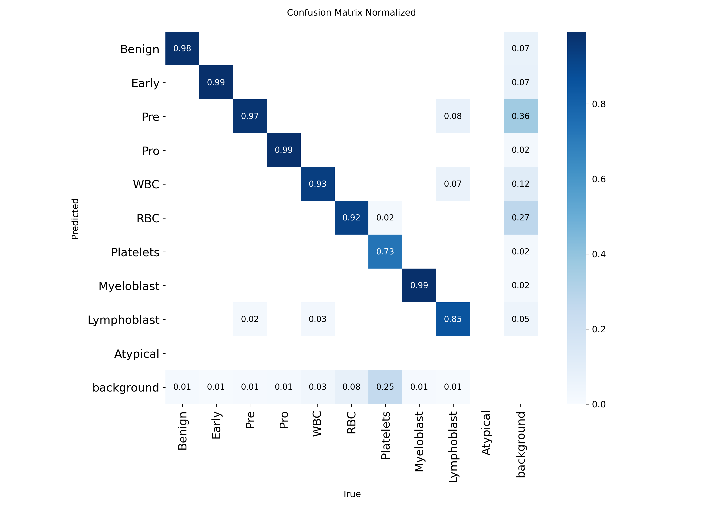
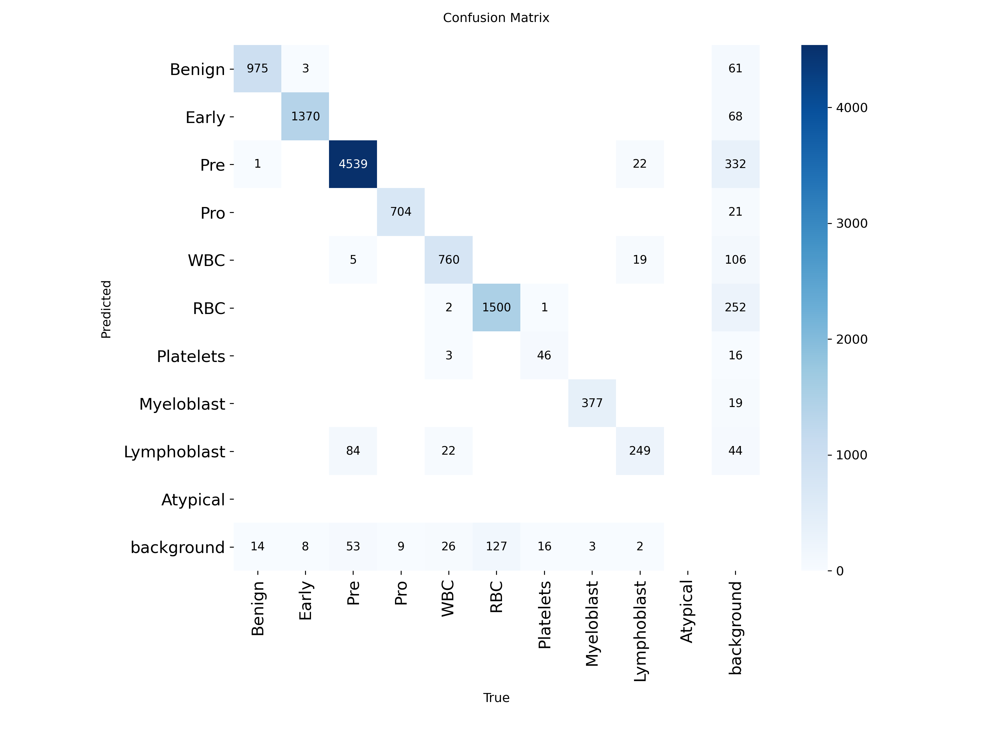
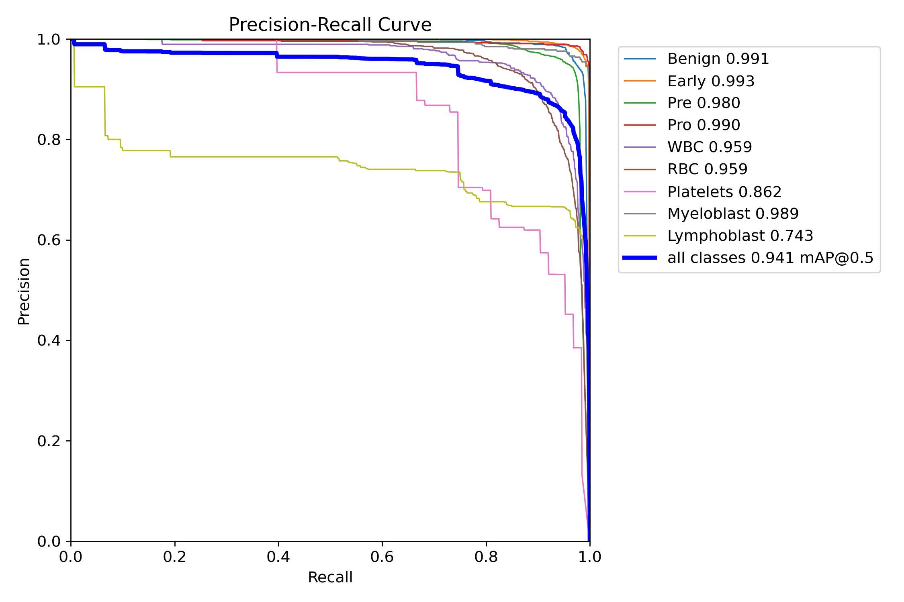
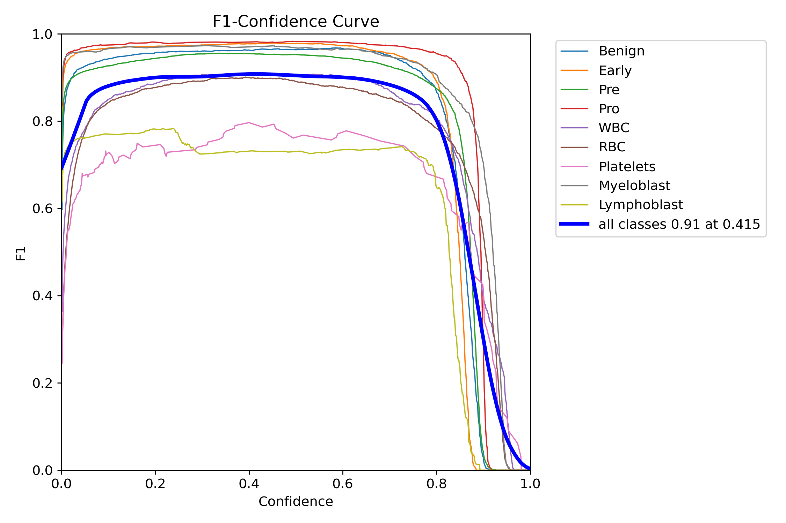
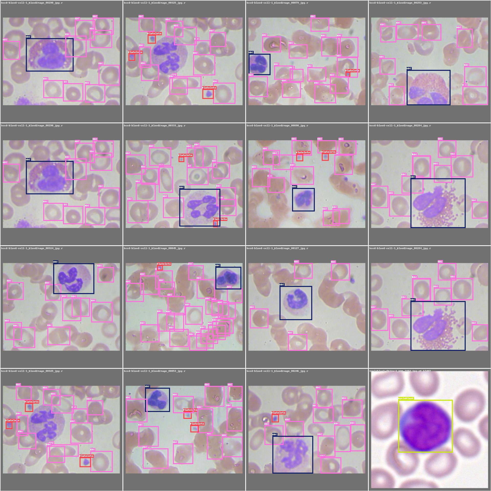
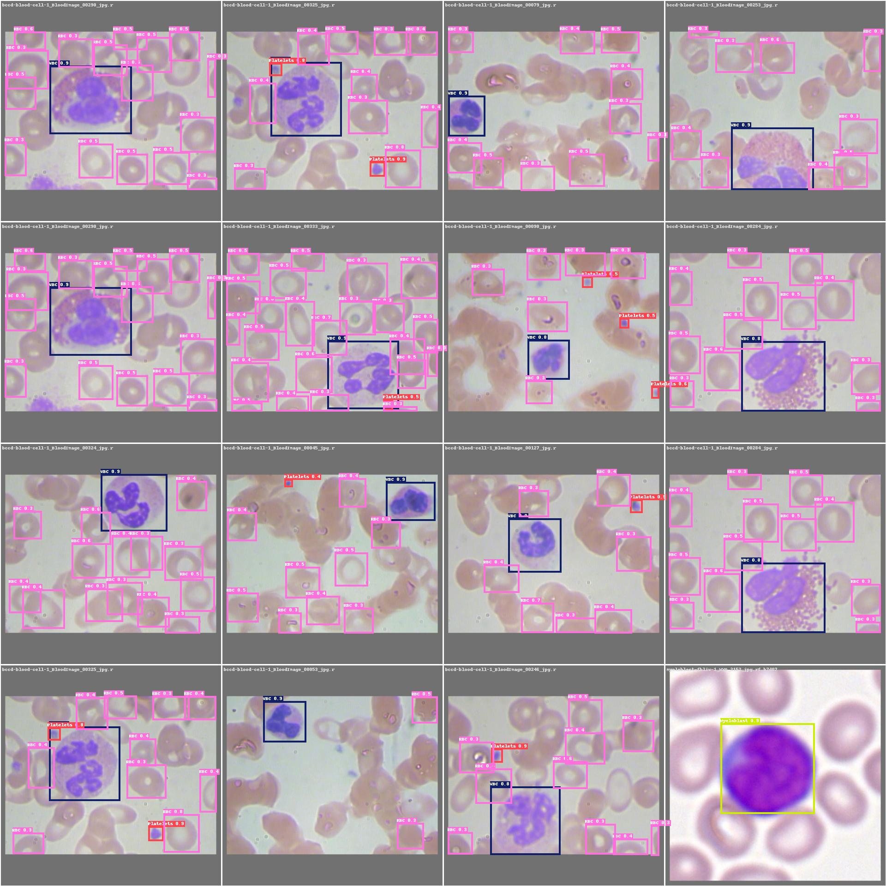

A PyTorch and YOLOv8n pipeline trained on 25,875 microscopy fields with 115,548 annotated cells across 6 research cohorts. Features automated whole slide image (WSI) sliding-window tiling, multi-class blast morphology classification, and experience replay active learning.
Both files are the same epoch-19 weights (identical SHA-256), published under two names. v1.0.0 remains available from its release page for comparison.
The best validation epoch (19) of the v1.1.0 training run, with optimizer state stripped. Standard filename for Ultralytics pipelines, research reproduction, and transfer learning.
ca4a0efaa5a85f7d60470c167b56b813e7e79749ec6bfc3fcabf6d814034e19d
The deployment checkpoint bundled at data/models/active_model.pt, loaded by default by the FastAPI review sandbox and sliding-window WSI tiler.
ca4a0efaa5a85f7d60470c167b56b813e7e79749ec6bfc3fcabf6d814034e19d
# 1. Download best.pt directly via curl
curl -L -O https://github.com/abusuraihsakhri/blast-detection-algo/releases/download/v1.1.0/best.pt
# 2. Or download via GitHub CLI
gh release download v1.1.0 -p "best.pt"
# 3. Verify SHA-256 hash matches
# Expected: ca4a0efaa5a85f7d60470c167b56b813e7e79749ec6bfc3fcabf6d814034e19d
certutil -hashfile best.pt SHA256 # On Windows
sha256sum best.pt # On Linux / macOSv1.1.0 was retrained for 20 epochs after fixing three data problems found in an audit of v1.0.0: polygon labels that Ultralytics misread, image-level tags stored as cell boxes, and evaluation images that reappear in other datasets' training splits. Both models are scored below on the same leak-free test set: 757 test images (4,631 boxes) with no near-duplicate in any training split, labels corrected. The released checkpoint is epoch 19, the best validation epoch.
| Class | v1.0.0 AP@50 | v1.1.0 AP@50 | v1.1.0 AP@50-95 | v1.1.0 P | v1.1.0 R |
|---|---|---|---|---|---|
| Benign | 0.960 | 0.969 | 0.687 | 0.918 | 0.973 |
| Early | 0.988 | 0.985 | 0.702 | 0.945 | 0.988 |
| Pre | 0.987 | 0.990 | 0.795 | 0.953 | 0.987 |
| Pro | 0.994 | 0.994 | 0.870 | 0.971 | 0.994 |
| WBC | 0.966 | 0.974 | 0.730 | 0.942 | 0.924 |
| RBC | 0.909 | 0.961 | 0.849 | 0.872 | 0.916 |
| Platelets | 0.851 | 0.940 | 0.667 | 1.000 | 0.782 |
| Myeloblast | 0.862 | 0.941 | 0.869 | 0.925 | 0.994 |
| Lymphoblast | – | No test split. On the validation holdout: AP@50 0.743, AP@50-95 0.612, P 0.689, R 0.780. The weakest class. | |||
| Atypical | – | Not evaluated: no training or evaluation boxes. Reserved for reviewer-assigned labels. | |||
Whole-slide tiling. evaluate_tiling.py stitches 64 test images into a 4800×4800 pyramidal TIFF and runs the sliding-window pipeline on it. The pipeline scores mAP@50 97.7% against 98.0% for predicting each image directly, so tiling, coordinate mapping and global NMS cost almost nothing. This checks the tiling code only: a mosaic of camera fields is not a scanned slide.
Limitations. Test images come from the original per-dataset splits, so these are in-distribution numbers, and Leukemia-NFXZN supplies 309 of the 757 test images. Blast-Cell-Detection has no leak-free test images at all: every one has a near-copy in another dataset's training split. Platelets rest on 26 BCCD images, so their AP is noisy. Lymphoblast was only measured on a validation holdout that also picked the checkpoint. The model has not been evaluated on real whole-slide scans, and tiles are not resampled to a common microns-per-pixel scale.
Inspect convergence loss curves, normalized confusion matrices, precision-recall trade-offs, and side-by-side ground truth vs predictions. Click any artifact to enlarge in high resolution.

Box, classification and distribution focal (DFL) losses with validation metrics for all 20 epochs. Validation mAP@50 rose to 94.1% at epoch 19. Unlike v1.0.0, which fell from 92.2% to 83.6% once mosaic augmentation switched off at epoch 11, it kept improving after the switch.

Class counts, box centroids, and box sizes for the training split.

Quantifies cross-class classification fidelity. Shows how often each class is confused with the others, including the precursor lymphoid stages (Early, Pre, Pro).

Raw counts of true labels against predicted classes on the validation split.

Precision-recall curves at IoU 0.50 for the 9 classes that have validation boxes. Atypical has none.

Identifies optimal operating threshold for production inference. The all-class F1 score peaks at 0.91 at confidence 0.415. The pipeline default is 0.25.

Reference labels from the source datasets.

Model predictions on the same validation images, with confidence scores.
Six public Roboflow datasets are merged and remapped into one 10-class taxonomy. The table shows the raw sources (115,548 boxes). Merging now cleans them in three ways. Polygon rows are converted to boxes; Leukemia-NFXZN mixes both formats in 1,010 label files, which Ultralytics misreads. Near-full-frame image tags are dropped (465 in Myeloblast-fbliw, 119 in Blood-Cell-znm2t). And train images that nearly duplicate any validation or test image are removed (676), because several sources re-export the same micrographs. Acute-Leukemia, which ships without a validation split, lends about 10% of its source images to validation. The v1.1.0 training set is 22,366 images (96,573 boxes), with 1,749 validation images (10,942 boxes).
| # | Cohort / Dataset Source | Target Morphological Scope | Train | Valid | Test | Total Images | Annotated Cells |
|---|---|---|---|---|---|---|---|
| 1 | Leukemia-NFXZN (Tawfiq Islam) | B-ALL subtyping (Benign, Early, Pre, Pro) | 6,589 | 622 | 312 | 7,523 | 83,854 |
| 2 | Blast-Cell-Detection (YOLOv4) | Binary blast vs leukocyte (blasts remapped to Pre) | 3,011 | 72 | 39 | 3,122 | 3,365 |
| 3 | BCCD Blood Cell Foundation | Baseline blood elements (WBC, RBC, Platelets) | 377 | 110 | 53 | 540 | 8,851 |
| 4 | Blood-Cell-znm2t Differential | Leukocyte differential (8 subtypes, all merged into WBC) | 9,105 | 389 | 387 | 9,881 | 10,589 |
| 5 | Acute-Leukemia AML/ALL | Myeloblast vs Lymphoblast (train split only) | 3,809 | 0 | 0 | 3,809 | 7,626 |
| 6 | Myeloblast-fbliw Dedicated | AML blasts (472 image-level "RBC" boxes included in totals) | 700 | 200 | 100 | 1,000 | 1,263 |
| Total Aggregated Datalake | 23,591 | 1,393 | 891 | 25,875 | 115,548 | ||
Box counts are raw source totals across train, valid, and test after remapping, before the cleaning described above. Descriptions give the usual morphology of each class. The model learns from the labels alone and does not measure these features explicitly.
Pre B-ALL blasts from Leukemia-NFXZN. Also includes 1,689 generic "blast-cell" boxes from Blast-Cell-Detection, which are not subtyped.
Precursor B-lymphoblastic stage with high N:C ratio, dense homogeneous chromatin texture, and absent or inconspicuous nucleoli.
Early uncommitted B-cell lineage blast (CD10-). Lacks mature B-cell surface markers; features round-to-oval nuclei with delicate chromatin.
AML blasts from Acute-Leukemia and Myeloblast-fbliw. In Myeloblast-fbliw the blasts are labeled "WBC" in the source and remapped here.
Lymphoblasts from the Acute-Leukemia dataset only. Measured on a 10% validation holdout (AP@50 0.743), the weakest class. There is no test split.
The non-leukemic class of the Leukemia-NFXZN B-ALL dataset.
Leukocytes from BCCD, Blood-Cell-znm2t (all 8 subtypes merged), Blast-Cell-Detection, and Acute-Leukemia.
Erythrocytes from BCCD. The count includes 472 Myeloblast-fbliw boxes, 465 of which cover more than 80% of the image; these image-level tags are dropped from v1.1.0 training.
Platelets from BCCD. The rarest trained class. Leak-free test AP@50 0.940, measured on only 26 images.
No source dataset maps to this class, so the released model has never seen an example. It exists so reviewers can assign it in the review UI.
Tiles whole-slide images, writes detections to a local review queue, and fine-tunes on reviewed tiles mixed with earlier data to reduce forgetting.
Reads whole-slide images with tiffslide, skips background tiles, and runs 512×512 patches with 25% overlap in batches. Boxes touching an interior tile edge are dropped, since the overlap shows those cells whole in a neighbor tile. The rest are mapped to slide coordinates for global NMS.
Builds each fine-tuning set from newly reviewed tiles plus a stratified sample of earlier reviewed tiles (4 old per new), with a 1.5× quota for underrepresented classes, to reduce forgetting.
Local FastAPI review interface with a confidence slider, box editing, and validated image uploads. Fine-tuning is started separately with training_pipeline.py --mode hitl.
The weights are pre-bundled in the repository at data/models/active_model.pt and can also be downloaded directly as best.pt from GitHub Releases for inference with Ultralytics YOLO or the custom WSI pipeline.
# 1. Clone the repository
git clone https://github.com/abusuraihsakhri/blast-detection-algo.git
cd blast-detection-algo
# 2. Create isolated virtual environment
python -m venv .venv
source .venv/bin/activate # On Windows: .\.venv\Scripts\Activate.ps1
# 3. Install dependencies
pip install -r requirements.txt
# 4. Check active model weights (pre-loaded in repository)
ls -lh data/models/active_model.pt
# Option: Or fetch best.pt directly from GitHub Release v1.1.0
curl -L -O https://github.com/abusuraihsakhri/blast-detection-algo/releases/download/v1.1.0/best.ptfrom ultralytics import YOLO
import cv2
# Load the trained model checkpoint (best.pt or active_model.pt)
model = YOLO("data/models/active_model.pt") # or YOLO("best.pt")
# Run inference on a blood smear field
results = model.predict(
source="path/to/smear_field.jpg",
conf=0.25, # 25% confidence threshold
iou=0.45, # NMS IoU threshold
imgsz=640,
device="cuda:0" # or "cpu"
)
# Parse detected blast candidates
for box in results[0].boxes:
cls_id = int(box.cls[0].item())
cls_name = model.names[cls_id]
confidence = float(box.conf[0].item())
xyxy = box.xyxy[0].tolist()
print(f"Detected {cls_name:<12} ({confidence:.2%}) at {xyxy}")# Command line: tiles the slide, runs detection, applies global NMS,
# saves tiles to data/raw_tiles/ and writes detections to the SQLite review queue
python inference_pipeline.py path/to/slide.svs
# Same thing from Python
from database import init_db
from inference_pipeline import InferencePipeline
init_db()
InferencePipeline().run("path/to/slide.svs")
# Tile size, overlap, confidence and NMS IoU come from config.py
# (override with BLAST_TILE_SIZE, BLAST_INFERENCE_OVERLAP_PCT, ... in .env)# Launch the FastAPI human-in-the-loop review interface
python app.py
# Review server starts at http://127.0.0.1:8000
# Features:
# - Review queue for tiles produced by inference_pipeline.py
# - Sandbox: upload a smear image (type, size and pixel limits enforced)
# - Confidence threshold slider, box editing and class reassignment
# Fine-tune on reviewed tiles (run separately, after saving reviews)
python training_pipeline.py --mode hitl